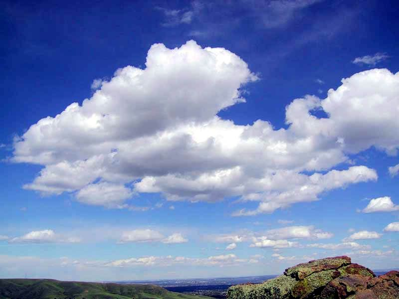
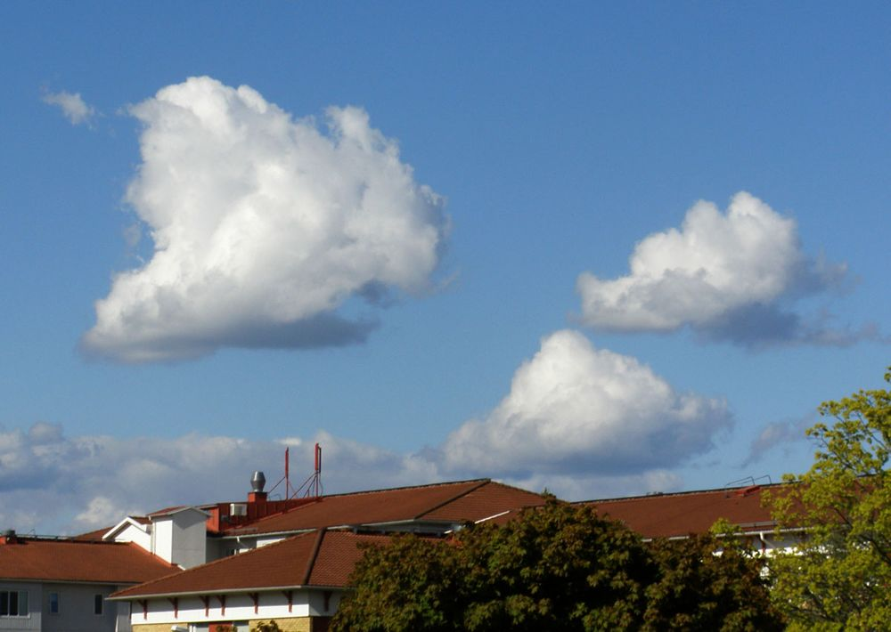

1Bulut aslında nedir?
Bulutlar uzaktan yumuşak pamuk yığınlarına benzer. Oysa bir bulut, havada asılı duran milyarlarca küçük su damlacığından ve yüksek bulutlarda buz kristallerinden oluşur.
Güneş yeryüzünü ısıttıkça su buharlaşır ve sıcak havayla birlikte yükselir. Yükseldikçe hava soğur. Soğuyan su buharı, havadaki toz, tuz ve polen gibi minik parçacıkların etrafında yoğunlaşarak damlacıklara dönüşür. Bu damlacıklar bir araya gelince bulut görünür hâle gelir.

2Bir bulut kaç ton?
ABD Jeoloji Araştırmaları Kurumu (USGS) bunu basit bir hesapla açıklıyor. Ortalama bir kümülüs bulutunun yaklaşık 1 kilometreküp hacminde olduğunu ve her metreküpünde yaklaşık yarım gram su bulunduğunu varsayalım.
1 kilometreküp, 1 milyar metreküp demektir. Her metreküpte yarım gram su varsa toplam su miktarı yaklaşık 500 milyon gram, yani 500 ton eder. Kabarık, beyaz bir bulut yaklaşık 500 tonluk su taşıyor olabilir. Büyük fırtına bulutları ise milyonlarca ton su içerebilir.
3Peki neden düşmüyor?
Bulutun toplamı ağır olsa da her bir damlacık son derece küçüktür. Damlacıkların çapı bir saç telinden çok daha incedir ve tek tek neredeyse hiçbir şey tartmazlar.
Bu kadar küçük damlacıklar çok yavaş düşer. Bulutları oluşturan yükselen sıcak hava akımları, bu yavaş düşüşü kolayca dengeler ve damlacıkları havada tutar. Ayrıca bulut, devasa bir hacme yayılmıştır. 500 ton su, tek bir yerde değil, kilometrelerce alana dağılmış durumdadır.

4Yağmur nasıl başlar?
Bulut içindeki damlacıklar çarpışıp birleştikçe büyür. Bir damla yeterince büyüyüp ağırlaştığında, yükselen hava onu artık taşıyamaz ve damla düşmeye başlar. Bu yağmurdur. Soğuk bulutlarda önce buz kristalleri büyür ve düşerken eriyerek yağmura dönüşür ya da kar olarak yere ulaşır.
💡 Biliyor muydun?
- Sis aslında yere çok yakın oluşmuş bir buluttur.
- Uçak yolculuğunda bulutların içinden geçerken yaşanan sarsıntılar, bulutların içindeki güçlü yükselen ve alçalan hava akımlarından kaynaklanır.
- Kümülüs kelimesi Latincede 'yığın' anlamına gelir.
✅ Kaynaklar
📷 Görseller
- Kapak: PiccoloNamek · CC BY-SA 3.0 · Wikimedia Commons
- Güzel havada oluşan kümülüs bulutları: Michael Jastremski · CC BY-SA 2.0 · Wikimedia Commons
- Küçük kümülüs bulutları: Kr-val · Public domain · Wikimedia Commons